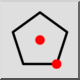

Πολύγωνο (κέντρο, γωνία)
Γραμμή εργαλείων / Εικονίδιο:


Μενού: Σχεδίαση > Σχήμα > Πολύγωνο (κέντρο, γωνία)
Συντομεύσεις: P, G, 1 | H, C
Εντολές: linepolygon | polygon | pg1
Πρόκειται για αυτόματη μετάφραση.
Γραμμή εργαλείων / Εικονίδιο:


Δημιουργεί πολύγωνα με δοθέν το κέντρο και μία γωνία.